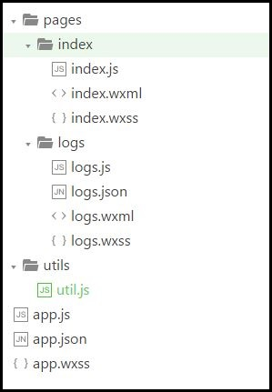

<!DOCTYPE html><html><head><meta charset="utf-8"><title>教学讲义 | 技术学派</title><meta name="viewport" content="width=device-width,initial-scale=1,maximum-scale=1"><meta name="keywords" content="IT培训, Python, 大数据, 人工智能, Web前端, PHP, "><meta name="description" content="第一章 微信小程序开发概述第一节 小程序介绍什么是微信小程序？2015年年底张小龙在一次大会上提出来的，最初叫微信号，现在叫微信小程序；因苹果不允许出现‘应用’二字，后改称小程序小程序可以做什么？可以做99%的互联网产品，比如淘宝、美团、滴滴等小程序为什么会火？生态系统：微信的用户量大，每天差不多有7亿用户优点：”无需下载，扫码即用，用完即走”小巧：小程序项目的大小不能超过2M对比：微信小程序有项"><meta property="og:type" content="website"><meta property="og:title" content="教学讲义"><meta property="og:url" content="http://www.JiShuXuePai.com/tech/wechat/notes.html"><meta property="og:site_name" content="技术学派"><meta property="og:description" content="第一章 微信小程序开发概述第一节 小程序介绍什么是微信小程序？2015年年底张小龙在一次大会上提出来的，最初叫微信号，现在叫微信小程序；因苹果不允许出现‘应用’二字，后改称小程序小程序可以做什么？可以做99%的互联网产品，比如淘宝、美团、滴滴等小程序为什么会火？生态系统：微信的用户量大，每天差不多有7亿用户优点：”无需下载，扫码即用，用完即走”小巧：小程序项目的大小不能超过2M对比：微信小程序有项"><meta property="og:locale" content="zh-CN"><meta property="og:image" content="http://www.jishuxuepai.com/tech/wechat/images/catalog.jpg"><meta property="og:updated_time" content="2018-05-11T08:14:19.591Z"><meta name="twitter:card" content="summary"><meta name="twitter:title" content="教学讲义"><meta name="twitter:description" content="第一章 微信小程序开发概述第一节 小程序介绍什么是微信小程序？2015年年底张小龙在一次大会上提出来的，最初叫微信号，现在叫微信小程序；因苹果不允许出现‘应用’二字，后改称小程序小程序可以做什么？可以做99%的互联网产品，比如淘宝、美团、滴滴等小程序为什么会火？生态系统：微信的用户量大，每天差不多有7亿用户优点：”无需下载，扫码即用，用完即走”小巧：小程序项目的大小不能超过2M对比：微信小程序有项"><meta name="twitter:image" content="http://www.jishuxuepai.com/tech/wechat/images/catalog.jpg"><link rel="stylesheet" href="/libs/bootstrap/bootstrap-grid.css"><link rel="stylesheet" href="/libs/font-awesome/css/font-awesome.min.css"><link rel="stylesheet" href="/libs/titillium-web/styles.css"><link rel="stylesheet" href="/libs/source-code-pro/styles.css"><link rel="stylesheet" href="/css/style.css"><script src="/libs/jquery/jquery.min.js"></script><link rel="stylesheet" href="/libs/lightgallery/css/lightgallery.min.css"><link rel="stylesheet" href="/libs/justified-gallery/justifiedGallery.min.css"><script>var _hmt=_hmt||[];!function(){var e=document.createElement("script");e.src="//hm.baidu.com/hm.js?4c1bd812de3c30edbaa2b803c66f0a04";var t=document.getElementsByTagName("script")[0];t.parentNode.insertBefore(e,t)}()</script></head></html><body><div id="wrap"><header id="header"><div id="header-outer" class="outer"><div class="container"><div class="container-inner"><div id="header-title"><h1 class="logo-wrap"><a href="/" class="logo"></a></h1></div><div id="header-inner" class="nav-container"><a id="main-nav-toggle" class="nav-icon fa fa-bars">菜单</a><div class="nav-container-inner"><ul id="main-nav"><li class="main-nav-list-item"><a class="main-nav-list-link" href="/">主页</a></li><li class="main-nav-list-item"><a class="main-nav-list-link" href="/edu/index.html">学编程</a></li><li class="main-nav-list-item"><a class="main-nav-list-link" href="/blog/">博客</a></li><li class="main-nav-list-item"><a class="main-nav-list-link" href="/tips.html">学习建议</a></li><li class="main-nav-list-item"><a class="main-nav-list-link" href="/about.html">关于</a></li></ul><nav id="sub-nav"><div id="search-form-wrap"><form class="search-form"><input type="text" class="ins-search-input search-form-input" placeholder="搜索"> <button type="submit" class="search-form-submit"></button></form><div class="ins-search"><div class="ins-search-mask"></div><div class="ins-search-container"><div class="ins-input-wrapper"><input type="text" class="ins-search-input" placeholder="想要查找什么..."> <span class="ins-close ins-selectable"><i class="fa fa-times-circle"></i></span></div><div class="ins-section-wrapper"><div class="ins-section-container"></div></div></div></div><script>window.INSIGHT_CONFIG={TRANSLATION:{POSTS:"文章",PAGES:"页面",CATEGORIES:"分类",TAGS:"标签",UNTITLED:"(未命名)"},ROOT_URL:"/",CONTENT_URL:"/content.json"}</script><script src="/js/insight.js"></script></div></nav></div></div></div></div></div></header><div class="container"><div class="main-body container-inner"><div class="main-body-inner"><section id="main"><div class="main-body-header"><h1 class="header"><em class="page-title-link" data-url="/tech/wechat/notes.html">教学讲义</em><div class="author">周灿</div></h1></div><div class="main-body-content"><article id="page-" class="article article-single article-type-page" itemscope itemprop="blogPost"><div class="article-inner"><header class="article-header"><h1 class="article-title" itemprop="name">教学讲义</h1></header><div class="article-entry" itemprop="articleBody"><h1 id="第一章-微信小程序开发概述"><a href="#第一章-微信小程序开发概述" class="headerlink" title="第一章 微信小程序开发概述"></a>第一章 微信小程序开发概述</h1><h2 id="第一节-小程序介绍"><a href="#第一节-小程序介绍" class="headerlink" title="第一节 小程序介绍"></a>第一节 小程序介绍</h2><ul><li>什么是微信小程序？<ul><li>2015年年底张小龙在一次大会上提出来的，最初叫微信号，现在叫微信小程序；因苹果不允许出现‘应用’二字，后改称小程序</li></ul></li><li>小程序可以做什么？<ul><li>可以做99%的互联网产品，比如淘宝、美团、滴滴等</li></ul></li><li>小程序为什么会火？<ul><li>生态系统：微信的用户量大，每天差不多有7亿用户</li><li>优点：”无需下载，扫码即用，用完即走”</li><li>小巧：小程序项目的大小不能超过2M</li><li>对比：微信小程序有项目大小的限制，而APP则没有这种大小的限制；另外就是小程序不同于APP软件它是运行在微信上的；除此之外，因为他是运行在微信上的，所以它可以调用微信的API接口，比如：它可以获取用户信息。</li></ul></li><li>小程序的发展前景？<ul><li>微信互联网：搜索引擎、用户关系、微信支付、传播渠道、订阅号、服务号</li><li>除了能开发最初的的互联网产品外，目前又开发出直播、游戏等功能；</li><li>对初创企业是很好的切入点，成本低，未来拭目以待</li></ul></li></ul><h2 id="第二节-开发环境搭建"><a href="#第二节-开发环境搭建" class="headerlink" title="第二节 开发环境搭建"></a>第二节 开发环境搭建</h2><ul><li>搭建开发环境<ul><li>下载</li><li>安装</li><li>运行</li></ul></li><li>创建小程序开发项目<ul><li>扫码进入</li><li>AppID</li><li>项目名称</li><li>quick start选项</li><li>项目目录介绍</li><li>开发界面介绍<ul><li>菜单栏</li><li>编辑</li><li>调试</li><li>项目</li><li>前后台</li></ul></li></ul></li><li>开发助手<ul><li>小程序开发文档</li></ul></li></ul><h2 id="第三节-项目结构分析"><a href="#第三节-项目结构分析" class="headerlink" title="第三节 项目结构分析"></a>第三节 项目结构分析</h2><ul><li><p>app文件</p><ul><li>app.js (必须)<ul><li>全局脚本，有一个App()方法，<strong>注册程序</strong>，并将对程序做初始化的操作</li><li>方法首字母大写</li></ul></li><li>app.json (必须)<ul><li>全局配置，配置页面信息(页面个数、页面名称、页面路径、窗口表现、设置网络超时时间、设置多 tab)</li><li>演示：配置一个新的demo页面，然后查看项目目录</li><li>注意：json数据格式</li></ul></li><li>app.wxss<ul><li>全局样式，定义在 app.wxss 中的样式为全局样式，作用于每一个页面</li></ul></li></ul></li><li><p>pages文件 (</p><ul><li>规定：为了方便开发者减少配置项，文件名必须与页面的文件夹名相同，便于框架自动查找，不需要做更多的配置</li></ul></li></ul><ul><li>文件名.wxml (必须)<ul><li>页面结构</li></ul></li><li>文件名.wxss<ul><li>页面样式，页面文件中定义的样式为局部样式，只作用在对应的页面，并会覆盖 app.wxss 中相同的选择器。</li></ul></li><li>文件名.js (必须)<ul><li>页面脚本，有一个Page()方法，<strong>注册页面</strong>，如果不注册页面的话，编译器会报警”XXXX出现脚本错误或者未正确调用 Page()”</li><li>方法首字母大写</li></ul></li><li>文件名.json<ul><li>页面配置</li><li>注意：如果不打算给页面写单独的配置文件，不要创建空白的.json文件，会导致页面路径查找失败。如果你不小心创建了，请务必保证文件里至少有个<code>{}</code>,否则编译器会报错。</li><li>注意：json数据格式</li></ul></li><li><p>演示：创建页面，查看全局配置文件app.json</p></li><li><p>utils文件</p><ul><li>util.js<ul><li>主要用于存放全局的一些.js文件，公共用到的一些事件处理代码文件可以放到该文件夹下，用于全局调用</li></ul></li></ul></li></ul><p></p><h2 id="第四节-创建小程序空项目"><a href="#第四节-创建小程序空项目" class="headerlink" title="第四节 创建小程序空项目"></a>第四节 创建小程序空项目</h2><blockquote><p>从一无所有到创建完整项目结构，深刻体验和了解项目的组成与各个文件的作用<br>不勾选quick start快速创建项目选项</p></blockquote><ul><li>声明：空项目最初什么都没有，必然会报错</li><li>创建全局app文件<ul><li>创建app.js全局脚本文件，<strong>注册程序</strong></li><li>创建app.json全局文件<ul><li>json数据必须要有一个对象<code>{}</code>，否则报错</li><li>全局配置页面、window、tabbar</li></ul></li></ul></li><li>创建页面pages文件夹<ul><li>创建页面文件<ul><li>方法一：全局配置生成新页面</li><li>方法二：用户界面手动创建</li></ul></li><li>页面结构搭建</li><li>页面数据逻辑</li><li>页面窗口配置<ul><li>页面配置window窗口</li></ul></li></ul></li></ul><hr><h1 id="第二章-组件视图层"><a href="#第二章-组件视图层" class="headerlink" title="第二章 组件视图层"></a>第二章 组件视图层</h1><blockquote><p>框架为开发者提供了一系列基础组件，开发者可以通过组合这些基础组件进行快速开发。</p></blockquote><ul><li><p>什么是组件</p><ul><li>组件类似HTML标签视图层的基本组成单元</li><li>组件自带一些功能与微信风格的样式</li><li>一个组件通常包括<code>开始标签</code>和<code>结束标签</code>，<code>属性</code>用来修饰这个组件，<code>内容</code>在两个标签之内</li><li>注意：所有组件与属性都是小写，以连字符-连接</li></ul></li><li><p>基础常用组件</p><ul><li>视图容器组件<ul><li>view</li><li>swiper (可选)</li><li>covor-view (可选)</li><li>movable-view (可选)</li></ul></li><li>基础内容组件<ul><li>text</li><li>icon (可选)</li><li>progress (可选)</li></ul></li><li>表单组件<ul><li>input</li><li>button</li><li>checkbox (可选)</li><li>form (可选)</li><li>label (可选)</li><li>radio (可选)</li><li>textarea (可选)</li><li>switch (可选)</li><li>slide (可选)</li><li>picker (可选)</li><li>picker-view (可选)</li></ul></li><li>导航<ul><li>navigator (可选)</li></ul></li><li>多媒体组件<ul><li>image</li><li>audio (可选)</li><li>video (可选)</li></ul></li><li>地图<ul><li>map (可选)</li></ul></li></ul></li><li><p>选择器</p><ul><li>class</li><li>id</li><li>element</li><li>element, element</li><li>::after</li><li>::before</li></ul></li><li><p>样式</p><ul><li><p>选择器样式 (通过选择器属性)</p></li><li><p>内联样式 (通过style属性)</p></li><li><p>使用规则：静态的样式统一写到 class 中。style 接收动态的样式，在运行时会进行解析，请尽量避免将静态的样式写进 style 中，以免影响渲染速度</p></li><li><p>尺寸单位</p><blockquote><p>在写 CSS 样式时，开发者需要考虑到手机设备的屏幕会有不同的宽度和设备像素比，采用一些技巧来换算一些像素单位，新增了尺寸单位rpx；WXSS 在底层支持新的尺寸单位 rpx ，开发者可以免去换算的烦恼，只要交给小程序底层来换算即可，由于换算采用的浮点数运算，所以运算结果会和预期结果有一点点偏差</p></blockquote><ul><li>rpx（responsive pixel）: 可以根据屏幕宽度进行自适应</li><li>比如：规定屏幕宽为750rpx。如在 iPhone6 上，屏幕宽度为375px，共有750个物理像素，则750rpx = 375px = 750物理像素，1rpx = 0.5px = 1物理像素</li><li>建议：开发微信小程序时设计师用 iPhone6 作为视觉稿的标准</li><li>注意：在较小的屏幕上不可避免的会有一些毛刺，请在开发时尽量避免这种情况</li></ul></li></ul></li></ul><hr><h1 id="第三章-脚本逻辑层"><a href="#第三章-脚本逻辑层" class="headerlink" title="第三章 脚本逻辑层"></a>第三章 脚本逻辑层</h1><h2 id="第一节-逻辑层结构"><a href="#第一节-逻辑层结构" class="headerlink" title="第一节 逻辑层结构"></a>第一节 逻辑层结构</h2><ul><li>Page()<ul><li>作用：使用该函数注册来一个新页面</li><li>功能：接受一个 object 参数，指定页面的初始数据、生命周期函数、事件处理函数等</li><li>注意：object 内容在页面加载时会进行一次深拷贝，需考虑数据大小对页面加载的开销</li></ul></li><li>配置项<ul><li>data—页面的初始数据</li><li>function—页面相关事件处理函数</li><li>生命周期函数—(备注：后续单独讲解)</li></ul></li></ul><h2 id="第二节-数据渲染"><a href="#第二节-数据渲染" class="headerlink" title="第二节 数据渲染"></a>第二节 数据渲染</h2><ul><li><p>数据绑定</p><ul><li><p>使用 Mustache 语法（双大括号）将变量包起来</p></li><li><p>组件内容：<code>&lt;text&gt;&lt;/text&gt;</code></p><ul><li><p>可以渲染的数据类型</p><ul><li>String</li><li>Number</li><li>Boolean</li><li>Array</li><li>Object</li></ul></li><li><p>简单逻辑运算</p><figure class="highlight html"><table><tr><td class="gutter"><pre><span class="line">1</span><br></pre></td><td class="code"><pre><span class="line"><span class="tag">&lt;<span class="name">view</span>&gt;</span>&#123;&#123;1&gt;2?2:1&#125;&#125;<span class="tag">&lt;/<span class="name">view</span>&gt;</span></span><br></pre></td></tr></table></figure></li><li><p>简单算术运算</p><figure class="highlight html"><table><tr><td class="gutter"><pre><span class="line">1</span><br></pre></td><td class="code"><pre><span class="line"><span class="tag">&lt;<span class="name">view</span>&gt;</span> &#123;&#123;1 + 1&#125;&#125; + &#123;&#123;2&#125;&#125; + 2 <span class="tag">&lt;/<span class="name">view</span>&gt;</span></span><br></pre></td></tr></table></figure></li><li><p>字符串拼接</p><figure class="highlight html"><table><tr><td class="gutter"><pre><span class="line">1</span><br></pre></td><td class="code"><pre><span class="line"><span class="tag">&lt;<span class="name">view</span>&gt;</span>&#123;&#123;"hello" + name&#125;&#125;<span class="tag">&lt;/<span class="name">view</span>&gt;</span></span><br></pre></td></tr></table></figure></li></ul></li><li><p>组件属性：<code>&lt;image src=&quot;&quot;&gt;&lt;/image&gt;</code></p></li><li><p>关键字：<code>&lt;checkbox checked=&quot;false&quot;&gt; &lt;/checkbox&gt;</code></p></li><li><p>注意：不论是组件内容、组件属性还是关键字，<strong>均需要在双引号之内</strong></p></li><li><p><strong>友情提示</strong>：不要直接写 checked=”false”，其计算结果是一个字符串，转成 boolean 类型后代表真值。</p></li></ul></li><li><p>列表渲染</p><ul><li><code>wx:for=&quot;&quot;</code><ul><li>数组下标变量名默认为 <code>index</code>，数组当前项的变量名默认为 <code>item</code></li><li>使用 <code>wx:for-item</code> 可以指定数组当前元素的变量名</li><li>使用 <code>wx:for-index</code> 可以指定数组当前下标的变量名</li><li>当 <code>wx:for</code> 的值为字符串时，会将字符串解析成字符串数组 <code>&lt;view wx:for=&quot;hello Mini Program&quot;&gt;&lt;/view&gt;</code></li></ul></li></ul><figure class="highlight js"><table><tr><td class="gutter"><pre><span class="line">1</span><br><span class="line">2</span><br><span class="line">3</span><br><span class="line">4</span><br><span class="line">5</span><br><span class="line">6</span><br><span class="line">7</span><br><span class="line">8</span><br><span class="line">9</span><br><span class="line">10</span><br><span class="line">11</span><br></pre></td><td class="code"><pre><span class="line">&lt;view wx:<span class="keyword">for</span>=<span class="string">"&#123;&#123;array&#125;&#125;"</span>&gt;</span><br><span class="line">  &#123;&#123;index&#125;&#125;: &#123;&#123;item.message&#125;&#125;</span><br><span class="line">&lt;<span class="regexp">/view&gt;</span></span><br><span class="line"><span class="regexp">Page(&#123;</span></span><br><span class="line"><span class="regexp">  data: &#123;</span></span><br><span class="line"><span class="regexp">    array: [</span></span><br><span class="line"><span class="regexp">      &#123; message: 'foo'&#125;, </span></span><br><span class="line"><span class="regexp">      &#123; message: 'bar'&#125;</span></span><br><span class="line"><span class="regexp">    ]</span></span><br><span class="line"><span class="regexp">  &#125;</span></span><br><span class="line"><span class="regexp">&#125;)</span></span><br></pre></td></tr></table></figure><ul><li><p><code>block wx:for</code></p><p>可以将 <code>wx:for</code> 用在<code>&lt;block/&gt;</code>标签上，以渲染一个包含多节点的结构块</p><p>block 只作为列表渲染用，自身不显示在页面中，不起布局作用</p><p><strong>注意：</strong> <code>&lt;block/&gt;</code> 并不是一个组件，它仅仅是一个包装元素，不会在页面中做任何渲染，只接受控制属性。</p></li><li><p><code>wx:key</code></p><ul><li><p>如果列表中项目的位置会动态改变或者有新的项目添加到列表中时，希望列表中的项目保持自己的特征和状态(如 <code>&lt;input/&gt;</code> 中的输入内容，<code>&lt;switch/&gt;</code> 的选中状态)，需要使用 <code>wx:key</code> 来指定列表中项目的唯一标识符。</p></li><li><p>如不提供 wx:key，会报一个 warning， 如果明确知道该列表是静态，或者不必关注其顺序，可以选择忽略。</p></li></ul></li></ul></li><li><p>条件渲染</p><ul><li><p><code>&lt;viewwx:if=&quot;&quot;&gt;1&lt;/view&gt;</code></p><p><code>&lt;view wx:elif=&quot;bool1&quot;&gt;2&lt;/view&gt;</code></p><p><code>&lt;view wx:if&gt;3&lt;/view&gt;</code></p></li><li><p><code>block wx:if</code></p></li></ul><figure class="highlight plain"><table><tr><td class="gutter"><pre><span class="line">1</span><br><span class="line">2</span><br><span class="line">3</span><br><span class="line">4</span><br></pre></td><td class="code"><pre><span class="line">&lt;block wx:if=&quot;&#123;&#123;true&#125;&#125;&quot;&gt;</span><br><span class="line">  &lt;view&gt; view1 &lt;/view&gt;</span><br><span class="line">  &lt;view&gt; view2 &lt;/view&gt;</span><br><span class="line">&lt;/block&gt;</span><br></pre></td></tr></table></figure><ul><li>wx:if 与 hidden的区别<ul><li><code>wx:if</code> 是<strong>惰性的</strong>，如果在初始渲染条件为 <code>false</code>，框架什么也不做，在条件第一次变成真的时候才开始局部渲染</li><li>相比之下，<code>hidden</code> 就简单的多，组件始终会被渲染，只是简单的控制显示与隐藏。<strong>hidden只对非block组件生效</strong>，属性值为true或false</li><li>一般来说，<code>wx:if</code> 有更高的切换消耗而 <code>hidden</code> 有更高的初始渲染消耗。因此，如果需要频繁切换的情景下，用 <code>hidden</code> 更好，如果在运行时条件不大可能改变则 <code>wx:if</code> 较好。</li></ul></li></ul></li></ul><h2 id="第三节-事件处理函数"><a href="#第三节-事件处理函数" class="headerlink" title="第三节 事件处理函数"></a>第三节 事件处理函数</h2><ul><li>事件绑定<ul><li>bind绑定，<code>bind</code>事件绑定不会阻止冒泡事件向上冒泡</li><li>catch绑定，<code>catch</code>事件绑定可以阻止冒泡事件向上冒泡</li></ul></li><li>事件分类<ul><li>冒泡事件，当一个组件上的事件被触发后，该事件会向父节点传递</li><li>非冒泡事件，当一个组件上的事件被触发后，该事件不会向父节点传递</li></ul></li><li>冒泡事件<ul><li>捕获阶段</li><li>冒泡阶段</li></ul></li><li>事件对象event<ul><li>解释：当组件触发事件时，逻辑层绑定该事件的处理函数会收到一个事件对象</li><li>点击事件对象相关属性<ul><li>type—事件类型</li><li>timeStamp—事件生成时的时间戳，页面打开到触发事件所经过的毫秒数。</li><li>target—触发事件的组件的一些属性值集合，触发事件的源组件，即<strong>事件源</strong></li><li>currentTarget—当前组件的一些属性值集合，事件绑定的当前组件，含冒泡阶段</li></ul></li><li>touch触摸事件相关属性<ul><li>touchstart—手指触摸动作开始</li><li>touchmove—手指触摸后移动</li><li>touchend—手指触摸动作结束</li><li>longtap—手指触摸后，超过350ms再离开(推荐使用longpress事件代替)</li><li>longpress—手指触摸后，超过350ms再离开，如果指定了事件回调函数并触发了这个事件，tap事件将不被触发</li></ul></li></ul></li><li>特殊事件处理函数<ul><li><code>onPullDownRefresh</code>: 下拉刷新</li><li><code>onReachBottom</code>: 上拉触底</li><li><code>onPageScroll</code>: 页面滚动</li><li><code>onShareAppMessage</code>: 用户转发</li></ul></li></ul><hr><h1 id="第四章-生命周期函数"><a href="#第四章-生命周期函数" class="headerlink" title="第四章 生命周期函数"></a>第四章 生命周期函数</h1><blockquote><p>小程序由两大线程组成：负责界面的线程（view thread）和服务线程（appservice thread），各司其职又互相配合</p></blockquote><ul><li><p>界面线程</p><ul><li><p>初始化状态</p><p>初始化界面线程所需要的工作，主要包括工作机制；等初始化完毕就向 “服务线程”发送初始化完毕信号，然后进入<strong>等待传回初始化数据</strong>状态。</p></li><li><p>首次渲染状态</p><p>收到“服务线程”发来的初始化数据后（就是 json和js中的data数据），就开始渲染小程序界面，渲染完毕后，发送“首次渲染完毕信号”给服务线程，并将页面展示给用户</p></li><li><p>持续渲染状态</p><p>此时界面线程继续一直等待“服务线程”通过this.setdata（）函数发送来的界面数据，只要收到就重新局部渲染，也因此只要更新数据并发送信号，界面就自动更新</p></li><li><p>结束状态</p></li></ul></li><li><p>服务线程</p><ul><li><p>初始化状态</p><p>此阶段就是启动服务线程所需的基本功能，比如信号发送模块。系统的初始化工作完毕，就调用自定义的onload和onshow，然后等待界面线程的“界面线程初始化完成”信号；onload是只会首次渲染的时候执行一次，onshow是每次界面切换都会执行</p></li><li><p>等待激活状态</p><p>接收到“界面线程初始化完成”信号后，将初始化数据发送给“界面线程”，等待界面线程完成初次渲染</p></li><li><p>激活状态</p><p>收到界面线程发送来的“首次渲染完成”信号后，就进入激活状态既程序的正常运行状态，并调用自定义的onReady()函数；此状态下就可以通过 this.setData 函数发送界面数据给界面线程进行局部渲染，更新页面</p></li><li><p>后台运行状态</p><p>如果界面进入后台，服务线程就进入后台运行状态</p></li><li><p>结束状态</p></li></ul></li></ul><h2 id="第一节-小程序运行机制"><a href="#第一节-小程序运行机制" class="headerlink" title="第一节 小程序运行机制"></a>第一节 小程序运行机制</h2><ul><li>小程序启动方式<ul><li>冷启动<ul><li>解释：冷启动指的是用户首次打开或小程序被微信主动销毁后再次打开的情况，此时小程序需要重新加载启动</li></ul></li><li>热启动<ul><li>解释：用户打开过某小程序，然后在一定时间内再次打开该小程序，此时无需重新启动，只需将后台态的小程序切换到前台，这个过程就是热启动</li></ul></li></ul></li><li>更新机制<ul><li>小程序冷启动时如果发现有新版本，将会异步下载新版本的代码包，并同时用客户端本地的包进行启动，即新版本的小程序需要等下一次冷启动才会应用上。</li></ul></li></ul><ul><li>运行机制<ul><li>小程序没有重启的概念</li><li>当小程序进入后台，客户端会维持一段时间的运行状态，超过一定时间后（目前是5分钟）会被微信主动销毁</li><li>置顶的小程序不会被微信主动销毁</li><li>当收到系统内存告警也会进行小程序的销毁</li></ul></li></ul><h2 id="第二节-App的生命周期"><a href="#第二节-App的生命周期" class="headerlink" title="第二节 App的生命周期"></a>第二节 App的生命周期</h2><blockquote><p><code>App()</code> 函数用来注册一个小程序。接受一个 object 参数，其指定小程序的生命周期函数等；以下讲解小程序的生命周期函数及其调用顺序</p></blockquote><ul><li>onLaunch—-监听小程序初始化<ul><li>解释：当小程序初始化完成时，会触发 onLaunch（全局只触发一次）</li></ul></li><li>onShow—监听小程序显示<ul><li>解释：当小程序启动，或从后台进入前台显示，会触发 onShow</li></ul></li><li>onHide—监听小程序隐藏<ul><li>解释：当小程序从前台进入后台，会触发 onHide</li></ul></li><li>onError—错误监听函数<ul><li>当小程序发生脚本错误，或者 api 调用失败时，会触发 onError 并带上错误信息</li></ul></li><li><strong>注释</strong>：<ul><li>当小程序启动时(前台工作模式)，会触发前两个函数</li><li>当小程序进入后台工作模式时，会触发onHide函数</li><li>当再次切换到前台工作模式时，会再次触发onShow函数</li></ul></li></ul><h2 id="第三节-Page的生命周期"><a href="#第三节-Page的生命周期" class="headerlink" title="第三节 Page的生命周期"></a>第三节 Page的生命周期</h2><blockquote><p><code>Page()</code> 函数用来注册一个页面。接受一个 object 参数，其指定页面的初始数据、生命周期函数、事件处理函数等；以下讲解页面的生命周期函数及其调用顺序</p></blockquote><ul><li>onLoad—监听页面加载</li><li>onShow—监听页面显示<ul><li>解释：切换至前台模式时触发</li></ul></li><li>onReady—监听页面初次渲染完成</li><li>onHide—监听页面隐藏<ul><li>解释：切换至后台模式时触发</li></ul></li><li>onUnload—监听页面卸载<ul><li>使用redirectTo方法实现页面跳转时触发</li></ul></li></ul><h2 id="第四节-App生命周期与Page生命周期的结合"><a href="#第四节-App生命周期与Page生命周期的结合" class="headerlink" title="第四节 App生命周期与Page生命周期的结合"></a>第四节 App生命周期与Page生命周期的结合</h2><blockquote><p>以下是生命周期函数的执行先后顺序</p></blockquote><ul><li>程序启动时<ul><li>App生命周期函数—onLaunch</li><li>App生命周期函数—onShow</li><li>Page生命周期函数—onLoad</li><li>Page生命周期函数—onShow</li><li>Page生命周期函数—onReady</li></ul></li><li>点击“后台”时<ul><li>Page生命周期函数—onHide</li><li>App生命周期函数—onHide</li></ul></li><li>点击“前台”时<ul><li>Page生命周期函数—onShow</li><li>App生命周期函数—onShow</li></ul></li><li><code>navigateTo</code>方法页面跳转时</li><li><code>redirectTo</code>方法页面跳转时</li></ul><hr><h1 id="第五章-模块化"><a href="#第五章-模块化" class="headerlink" title="第五章 模块化"></a>第五章 模块化</h1><h2 id="第一节-WXML模板"><a href="#第一节-WXML模板" class="headerlink" title="第一节 WXML模板"></a>第一节 WXML模板</h2><blockquote><p>WXML提供模板（template），可以在模板中定义代码片段，然后在不同的地方调用</p></blockquote><ul><li>定义模板<ul><li>位置：在<code>&lt;template/&gt;</code>内定义代码片段</li><li>属性：使用 <code>name</code> 属性，作为模板的名字</li></ul></li></ul><figure class="highlight plain"><table><tr><td class="gutter"><pre><span class="line">1</span><br><span class="line">2</span><br><span class="line">3</span><br><span class="line">4</span><br><span class="line">5</span><br><span class="line">6</span><br></pre></td><td class="code"><pre><span class="line">&lt;template name=&quot;myTemplate&quot;&gt;</span><br><span class="line">  &lt;view&gt;</span><br><span class="line">    &lt;text&gt; 定义模板 &lt;/text&gt;</span><br><span class="line">    &lt;text&gt; define template &lt;/text&gt;</span><br><span class="line">  &lt;/view&gt;</span><br><span class="line">&lt;/template&gt;</span><br></pre></td></tr></table></figure><ul><li><p>引用模板</p><ul><li><p>说明：WXML 提供两种文件引用方式<code>import</code>和<code>include</code></p></li><li><p>import</p><ul><li>作用：<code>import</code>可以在该文件中使用目标文件定义的<code>template</code></li></ul><figure class="highlight plain"><table><tr><td class="gutter"><pre><span class="line">1</span><br><span class="line">2</span><br><span class="line">3</span><br><span class="line">4</span><br><span class="line">5</span><br><span class="line">6</span><br><span class="line">7</span><br><span class="line">8</span><br></pre></td><td class="code"><pre><span class="line">&lt;!-- item.wxml --&gt;</span><br><span class="line">&lt;template name=&quot;item&quot;&gt;</span><br><span class="line">  &lt;text&gt;&#123;&#123;text&#125;&#125;&lt;/text&gt;</span><br><span class="line">&lt;/template&gt;</span><br><span class="line"></span><br><span class="line">&lt;!-- index.wxml --&gt;</span><br><span class="line">&lt;import src=&quot;item.wxml&quot;/&gt;</span><br><span class="line">&lt;template is=&quot;item&quot; data=&quot;&#123;&#123;text: &apos;forbar&apos;&#125;&#125;&quot;/&gt;</span><br></pre></td></tr></table></figure><ul><li>作用域<ul><li>说明：只会 import 目标文件中定义的 template，而不会 import 目标文件 import 的 template模板</li><li>解释：C import B，B import A，在C中可以使用B定义的template，在B中可以使用A定义的template，但是C不能使用A定义的template。</li></ul></li></ul><figure class="highlight plain"><table><tr><td class="gutter"><pre><span class="line">1</span><br><span class="line">2</span><br><span class="line">3</span><br><span class="line">4</span><br><span class="line">5</span><br><span class="line">6</span><br><span class="line">7</span><br><span class="line">8</span><br><span class="line">9</span><br><span class="line">10</span><br><span class="line">11</span><br><span class="line">12</span><br><span class="line">13</span><br><span class="line">14</span><br><span class="line">15</span><br></pre></td><td class="code"><pre><span class="line">&lt;!-- A.wxml --&gt;</span><br><span class="line">&lt;template name=&quot;A&quot;&gt;</span><br><span class="line">  &lt;text&gt; A template &lt;/text&gt;</span><br><span class="line">&lt;/template&gt;</span><br><span class="line"></span><br><span class="line">&lt;!-- B.wxml --&gt;</span><br><span class="line">&lt;import src=&quot;a.wxml&quot;/&gt;</span><br><span class="line">&lt;template name=&quot;B&quot;&gt;</span><br><span class="line">	&lt;text&gt; B template &lt;/text&gt;</span><br><span class="line">&lt;/template&gt;</span><br><span class="line"></span><br><span class="line">&lt;!-- C.wxml --&gt;</span><br><span class="line">&lt;import src=&quot;b.wxml&quot;/&gt;</span><br><span class="line">	&lt;template is=&quot;A&quot;/&gt;  &lt;!-- Error! Can not use tempalte when not import A. --&gt;</span><br><span class="line">&lt;template is=&quot;B&quot;/&gt;</span><br></pre></td></tr></table></figure></li><li><p>include</p><ul><li>解释：<code>include</code> 可以将目标文件<strong>除了</strong> <code>&lt;template/&gt;</code> <code>&lt;wxs/&gt;</code> 外的整个代码引入，相当于是拷贝到 <code>include</code> 位置</li></ul><figure class="highlight plain"><table><tr><td class="gutter"><pre><span class="line">1</span><br><span class="line">2</span><br><span class="line">3</span><br><span class="line">4</span><br><span class="line">5</span><br><span class="line">6</span><br><span class="line">7</span><br><span class="line">8</span><br><span class="line">9</span><br><span class="line">10</span><br></pre></td><td class="code"><pre><span class="line">&lt;!-- index.wxml --&gt;</span><br><span class="line">&lt;include src=&quot;header.wxml&quot;/&gt;</span><br><span class="line">&lt;view&gt; body &lt;/view&gt;</span><br><span class="line">&lt;include src=&quot;footer.wxml&quot;/&gt;</span><br><span class="line"></span><br><span class="line">&lt;!-- header.wxml --&gt;</span><br><span class="line">&lt;view&gt; header &lt;/view&gt;</span><br><span class="line"></span><br><span class="line">&lt;!-- footer.wxml --&gt;</span><br><span class="line">&lt;view&gt; footer &lt;/view&gt;</span><br></pre></td></tr></table></figure></li></ul></li><li><p>使用模板</p><ul><li>位置：所需的页面.wxml文件中</li><li>属性：使用 <code>is</code> 属性，声明需要的使用的模板，然后将模板所需要的 data 传入</li><li>剩余运算符： <code>{ {...arr}}</code> ，使用剩余运算符后，在模板文件中使用数据时，可以直接写每一项的key值</li></ul><figure class="highlight plain"><table><tr><td class="gutter"><pre><span class="line">1</span><br></pre></td><td class="code"><pre><span class="line">&lt;template is=&quot;msgItem&quot; data=&quot;&#123;&#123;...item&#125;&#125;&quot;/&gt;</span><br></pre></td></tr></table></figure></li><li><p>扩展</p><ul><li>is 属性可以使用 Mustache 语法，来动态决定具体需要渲染哪个模板</li></ul></li><li><p>模板作用域：模板拥有自己的作用域，只能使用 data 传入的数据以及模版定义文件中定义的 <code>&lt;wxs /&gt;</code> 模块</p></li></ul><figure class="highlight plain"><table><tr><td class="gutter"><pre><span class="line">1</span><br><span class="line">2</span><br><span class="line">3</span><br><span class="line">4</span><br><span class="line">5</span><br><span class="line">6</span><br><span class="line">7</span><br><span class="line">8</span><br><span class="line">9</span><br><span class="line">10</span><br></pre></td><td class="code"><pre><span class="line">&lt;template name=&quot;odd&quot;&gt;</span><br><span class="line">  &lt;view&gt; odd &lt;/view&gt;</span><br><span class="line">&lt;/template&gt;</span><br><span class="line">&lt;template name=&quot;even&quot;&gt;</span><br><span class="line">  &lt;view&gt; even &lt;/view&gt;</span><br><span class="line">&lt;/template&gt;</span><br><span class="line"></span><br><span class="line">&lt;block wx:for=&quot;&#123;&#123;[1, 2, 3, 4, 5]&#125;&#125;&quot;&gt;</span><br><span class="line">    &lt;template is=&quot;&#123;&#123;item % 2 == 0 ? &apos;even&apos; : &apos;odd&apos;&#125;&#125;&quot;/&gt;</span><br><span class="line">&lt;/block&gt;</span><br></pre></td></tr></table></figure><h2 id="第二节-WXSS-模板"><a href="#第二节-WXSS-模板" class="headerlink" title="第二节 WXSS  模板"></a>第二节 WXSS 模板</h2><ul><li>定义wxss模板</li></ul><figure class="highlight plain"><table><tr><td class="gutter"><pre><span class="line">1</span><br><span class="line">2</span><br><span class="line">3</span><br><span class="line">4</span><br></pre></td><td class="code"><pre><span class="line">/** common.wxss **/</span><br><span class="line">.small-p &#123;</span><br><span class="line">  padding:5px;</span><br><span class="line">&#125;</span><br></pre></td></tr></table></figure><ul><li>引用wxss模板</li></ul><p>使用<code>@import</code>语句可以导入外联样式表，<code>@import</code>后跟需要导入的外联样式表的<strong>相对路径</strong>，用<code>;</code>表示语句结束。</p><figure class="highlight plain"><table><tr><td class="gutter"><pre><span class="line">1</span><br><span class="line">2</span><br><span class="line">3</span><br><span class="line">4</span><br><span class="line">5</span><br></pre></td><td class="code"><pre><span class="line">/** app.wxss **/</span><br><span class="line">@import &quot;common.wxss&quot;;</span><br><span class="line">.middle-p &#123;</span><br><span class="line">  padding:15px;</span><br><span class="line">&#125;</span><br></pre></td></tr></table></figure><h2 id="第三节-WXS模板"><a href="#第三节-WXS模板" class="headerlink" title="第三节 WXS模板"></a>第三节 WXS模板</h2><blockquote><p>(数据或逻辑代码，脚本)</p></blockquote><ul><li>介绍<ul><li>WXS 代码可以编写在 wxml 文件中的 <code>&lt;wxs&gt;</code> 标签内，或以 <code>.wxs</code> 为后缀名的文件内，在该文件中直接编写 WXS 脚本</li><li>解释：每一个 <code>.wxs</code> 文件和 <code>&lt;wxs&gt;</code> 标签都是一个单独的模块，该 <code>.wxs</code> 文件可以被其他的 <code>.wxs</code> 文件 或 WXML 中的 <code>&lt;wxs&gt;</code> 标签引用</li><li>说明：每个模块都有自己独立的作用域，即在一个模块里面定义的变量与函数，默认为私有的，对其他模块不可见</li></ul></li><li>创建模块<ul><li>创建：创建<code>.wxs</code>，编写WXS脚本</li><li>module对象：每个<code>wxs</code>模块均有一个内置的<code>module</code>对象</li><li>export属性： 通过该属性，可以对外共享本模块的私有变量与函数</li><li>暴露：通过 <code>module.exports</code> 将该模块内部需要暴露的私有变量与函数暴露出去</li></ul></li></ul><figure class="highlight plain"><table><tr><td class="gutter"><pre><span class="line">1</span><br><span class="line">2</span><br><span class="line">3</span><br><span class="line">4</span><br><span class="line">5</span><br><span class="line">6</span><br><span class="line">7</span><br><span class="line">8</span><br><span class="line">9</span><br><span class="line">10</span><br></pre></td><td class="code"><pre><span class="line">// /pages/comm.wxs</span><br><span class="line"></span><br><span class="line">var foo = &quot;&apos;hello world&apos; from comm.wxs&quot;;</span><br><span class="line">var bar = function(d) &#123;</span><br><span class="line">  return d;</span><br><span class="line">&#125;</span><br><span class="line">module.exports = &#123;</span><br><span class="line">  foo: foo,</span><br><span class="line">  bar: bar</span><br><span class="line">&#125;;</span><br></pre></td></tr></table></figure><figure class="highlight plain"><table><tr><td class="gutter"><pre><span class="line">1</span><br><span class="line">2</span><br><span class="line">3</span><br><span class="line">4</span><br><span class="line">5</span><br></pre></td><td class="code"><pre><span class="line">&lt;!-- page/index/index.wxml --&gt;</span><br><span class="line"></span><br><span class="line">&lt;wxs src=&quot;./../tools.wxs&quot; module=&quot;tools&quot; /&gt;</span><br><span class="line">&lt;view&gt; &#123;&#123;tools.msg&#125;&#125; &lt;/view&gt;</span><br><span class="line">&lt;view&gt; &#123;&#123;tools.bar(tools.FOO)&#125;&#125; &lt;/view&gt;</span><br></pre></td></tr></table></figure><ul><li><p>引用模板—require函数</p><blockquote><p>在<code>.wxs</code>模块中引用其他 <code>wxs</code> 文件模块，可以使用 <code>require</code> 函数。</p><ul><li>注意点<ul><li>只能引用 <code>.wxs</code> 文件模块，且必须使用<strong>相对路径</strong></li><li><code>wxs</code> 模块均为单例，<code>wxs</code> 模块在第一次被引用时，会自动初始化为单例对象。多个页面，多个地方，多次引用，使用的都是同一个 <code>wxs</code>模块对象</li><li>如果一个 <code>wxs</code> 模块在定义之后，一直没有被引用，则该模块不会被解析与运行</li></ul></li><li><strong>提示</strong>： require 暂时不支持绝对路径</li></ul></blockquote><figure class="highlight plain"><table><tr><td class="gutter"><pre><span class="line">1</span><br><span class="line">2</span><br><span class="line">3</span><br><span class="line">4</span><br><span class="line">5</span><br><span class="line">6</span><br><span class="line">7</span><br><span class="line">8</span><br><span class="line">9</span><br><span class="line">10</span><br><span class="line">11</span><br></pre></td><td class="code"><pre><span class="line">// /pages/tools.wxs</span><br><span class="line"></span><br><span class="line">var foo = &quot;&apos;hello world&apos; from tools.wxs&quot;;</span><br><span class="line">var bar = function (d) &#123;</span><br><span class="line">  return d;</span><br><span class="line">&#125;</span><br><span class="line">module.exports = &#123;</span><br><span class="line">  FOO: foo,</span><br><span class="line">  bar: bar,</span><br><span class="line">&#125;;</span><br><span class="line">module.exports.msg = &quot;some msg&quot;;</span><br></pre></td></tr></table></figure><figure class="highlight plain"><table><tr><td class="gutter"><pre><span class="line">1</span><br><span class="line">2</span><br><span class="line">3</span><br><span class="line">4</span><br><span class="line">5</span><br><span class="line">6</span><br><span class="line">7</span><br></pre></td><td class="code"><pre><span class="line">// /pages/logic.wxs</span><br><span class="line"></span><br><span class="line">var tools = require(&quot;./tools.wxs&quot;);</span><br><span class="line"></span><br><span class="line">console.log(tools.FOO);</span><br><span class="line">console.log(tools.bar(&quot;logic.wxs&quot;));</span><br><span class="line">console.log(tools.msg);</span><br></pre></td></tr></table></figure><figure class="highlight plain"><table><tr><td class="gutter"><pre><span class="line">1</span><br><span class="line">2</span><br><span class="line">3</span><br></pre></td><td class="code"><pre><span class="line">&lt;!-- /page/index/index.wxml --&gt;</span><br><span class="line"></span><br><span class="line">&lt;wxs src=&quot;./../logic.wxs&quot; module=&quot;logic&quot; /&gt;</span><br></pre></td></tr></table></figure></li></ul><h2 id="第三节-自定义组件"><a href="#第三节-自定义组件" class="headerlink" title="第三节 自定义组件"></a>第三节 自定义组件</h2><ul><li><p>组件模板和样式</p><ul><li>说明：类似于页面，自定义组件拥有自己的 <code>wxml</code> 模版和 <code>wxss</code> 样式。</li><li>组件模板<ul><li>语法：组件模版的写法与页面模板相同</li><li>使用：组件模版与组件数据结合后生成的节点树，将被插入到组件的引用位置上</li></ul></li><li>组件wxml的slot<ul><li>说明：在组件的wxml模板中可以包含 <code>slot</code> 节点，用于承载组件引用时提供的子节点</li><li>使用多个slot：默认情况下只能使用一个slot，需要使用多slot时，可以在组件js中声明启用。启用后，可以在这个组件的wxml中使用多个slot，以不同的 name 来区分</li></ul></li></ul><figure class="highlight plain"><table><tr><td class="gutter"><pre><span class="line">1</span><br><span class="line">2</span><br><span class="line">3</span><br><span class="line">4</span><br><span class="line">5</span><br><span class="line">6</span><br><span class="line">7</span><br><span class="line">8</span><br><span class="line">9</span><br><span class="line">10</span><br><span class="line">11</span><br><span class="line">12</span><br><span class="line">13</span><br><span class="line">14</span><br><span class="line">15</span><br><span class="line">16</span><br><span class="line">17</span><br><span class="line">18</span><br><span class="line">19</span><br><span class="line">20</span><br><span class="line">21</span><br><span class="line">22</span><br><span class="line">23</span><br><span class="line">24</span><br></pre></td><td class="code"><pre><span class="line">Component(&#123;</span><br><span class="line">  options: &#123;</span><br><span class="line">    multipleSlots: true // 在组件定义时的选项中启用多slot支持</span><br><span class="line">  &#125;,</span><br><span class="line">  properties: &#123; /* ... */ &#125;,</span><br><span class="line">  methods: &#123; /* ... */ &#125;</span><br><span class="line">&#125;)</span><br><span class="line"></span><br><span class="line">&lt;!-- 组件模板 --&gt;</span><br><span class="line">&lt;view class=&quot;wrapper&quot;&gt;</span><br><span class="line">  &lt;slot name=&quot;before&quot;&gt;&lt;/slot&gt;</span><br><span class="line">  &lt;view&gt;这里是组件的内部细节&lt;/view&gt;</span><br><span class="line">  &lt;slot name=&quot;after&quot;&gt;&lt;/slot&gt;</span><br><span class="line">&lt;/view&gt;</span><br><span class="line"></span><br><span class="line">&lt;!-- 引用组件的页面模版 --&gt;</span><br><span class="line">&lt;view&gt;</span><br><span class="line">  &lt;component-tag-name&gt;</span><br><span class="line">    &lt;!-- 这部分内容将被放置在组件 &lt;slot name=&quot;before&quot;&gt; 的位置上 --&gt;</span><br><span class="line">    &lt;view slot=&quot;before&quot;&gt;这里是插入到组件slot name=&quot;before&quot;中的内容&lt;/view&gt;</span><br><span class="line">    &lt;!-- 这部分内容将被放置在组件 &lt;slot name=&quot;after&quot;&gt; 的位置上 --&gt;</span><br><span class="line">    &lt;view slot=&quot;after&quot;&gt;这里是插入到组件slot name=&quot;after&quot;中的内容&lt;/view&gt;</span><br><span class="line">  &lt;/component-tag-name&gt;</span><br><span class="line">&lt;/view&gt;</span><br></pre></td></tr></table></figure><ul><li>组件样式<ul><li>说明：组件对应 <code>wxss</code> 文件的样式，只对组件wxml内的节点生效</li><li>建议：一律使用单个class选择器来设置样式</li></ul></li></ul></li><li><p>Component构造器</p></li><li><p>组件事件</p></li><li><p>behaviors</p></li><li><p>组件间的关系</p></li></ul><h1 id="第六章-路由跳转与页面间的通信"><a href="#第六章-路由跳转与页面间的通信" class="headerlink" title="第六章 路由跳转与页面间的通信"></a>第六章 路由跳转与页面间的通信</h1><h2 id="第一节-路由跳转"><a href="#第一节-路由跳转" class="headerlink" title="第一节 路由跳转"></a>第一节 路由跳转</h2><blockquote><p>在小程序中所有页面的路由全部由框架进行管理</p></blockquote><ul><li>【参考】官方文档—框架—逻辑层—路由；<ul><li>详细讲解了<strong>页面栈</strong>、<strong>路由的触发方式以及页面生命周期函数</strong>、<strong>Tab 切换对应的生命周期</strong>等</li></ul></li><li>五种路由跳转方式<ul><li><code>navigateTo</code>, <code>redirectTo</code> 只能打开非 tabBar 页面。</li><li><code>switchTab</code> 只能打开 tabBar 页面,，但不能传参。</li><li><code>reLaunch</code> 可以打开任意页面。</li><li>页面底部的 tabBar 由页面决定，即只要是定义为 tabBar 的页面，底部都有 tabBar。</li><li>调用页面路由带的参数可以在目标页面的<code>onLoad</code>中获取</li></ul></li></ul><h2 id="第二节-页面通信"><a href="#第二节-页面通信" class="headerlink" title="第二节 页面通信"></a>第二节 页面通信</h2><blockquote><p>在微信小程序的开发过程之中，需要从A页面跳转到B页面，并且把A页面的数据传递到B页面使用</p></blockquote><ul><li><p>跨页传值</p><ul><li>方法一：全局变量<ul><li>定义位置：在小程序定义全局变量文件—app.js中定义，例如用户登录之后，需要在所有页面中使用用户登录状态等</li><li>使用方法：<code>getApp()</code>方法，任意页面可以直接加载全局变量，可以直接获取到App({})这个全局实例对象</li></ul></li></ul><figure class="highlight js"><table><tr><td class="gutter"><pre><span class="line">1</span><br><span class="line">2</span><br><span class="line">3</span><br></pre></td><td class="code"><pre><span class="line"><span class="comment">//page/index/index</span></span><br><span class="line"><span class="keyword">var</span> app=getApp();<span class="comment">//取得全局App(&#123;..&#125;)实例</span></span><br><span class="line"><span class="keyword">var</span> userInfo=app.globalData.userInfo;<span class="comment">//取得全局变量需要的值</span></span><br></pre></td></tr></table></figure><ul><li>方法二：<code>navigator</code>标签<ul><li>多个参数用&amp;连接</li><li>字符串与变量的拼接</li><li>序列化与反序列化</li></ul></li></ul><figure class="highlight plain"><table><tr><td class="gutter"><pre><span class="line">1</span><br><span class="line">2</span><br><span class="line">3</span><br><span class="line">4</span><br><span class="line">5</span><br><span class="line">6</span><br><span class="line">7</span><br><span class="line">8</span><br><span class="line">9</span><br><span class="line">10</span><br><span class="line">11</span><br><span class="line">12</span><br><span class="line">13</span><br><span class="line">14</span><br><span class="line">15</span><br><span class="line">16</span><br><span class="line">17</span><br><span class="line">18</span><br><span class="line">19</span><br><span class="line">20</span><br><span class="line">21</span><br><span class="line">22</span><br><span class="line">23</span><br><span class="line">24</span><br><span class="line">25</span><br><span class="line">26</span><br></pre></td><td class="code"><pre><span class="line">// index.wxml，将参数传递到detail页面</span><br><span class="line">&lt;navigator url=&quot;../detail/detail?id=2&amp;name=lily&amp;age=20&quot;&gt;&lt;/navigator&gt;</span><br><span class="line"></span><br><span class="line">// detail.js，detail页面的onLoad方法接收传入的参数</span><br><span class="line">onLoad: function(options)&#123;</span><br><span class="line">  this.setData(&#123;</span><br><span class="line">    id:options.id,</span><br><span class="line">    name:options.name,</span><br><span class="line">    age:options.age</span><br><span class="line">  &#125;)</span><br><span class="line">&#125;</span><br><span class="line"></span><br><span class="line">// index.js，复杂数据类型，要先用 JSON.stringify() 转成字符串传递</span><br><span class="line">let arr = [</span><br><span class="line">  &#123;name:&apos;lily&apos;, age:18&#125;,</span><br><span class="line">  &#123;name:&apos;john&apos;, age:20&#125;</span><br><span class="line">] ;</span><br><span class="line">wx.navigateTo(&#123;</span><br><span class="line">  url:&quot;../detail/detail?message=&quot;+JSON.stringify(detail),</span><br><span class="line">  success:function(res)&#123;&#125;</span><br><span class="line">&#125;)</span><br><span class="line"></span><br><span class="line">//序列化---将JSON对象转化为JSON字符 </span><br><span class="line">var last=JSON.stringify(obj);</span><br><span class="line">//反序列化---由JSON字符串转换为JSON对象 </span><br><span class="line">let obj = JSON.parse(data);</span><br></pre></td></tr></table></figure><ul><li>方法三：本地缓存（wx.setStorage/wx.getStorage）</li></ul></li><li><p>页内传值</p><ul><li>设置id的方法标识跳转后传递后的参数<code>id=&quot;&quot;</code></li><li>设置 data-xxx 的方法来标识要传递的值<code>data-index=&quot;&quot;</code></li><li>form表单和input输入框</li></ul><figure class="highlight plain"><table><tr><td class="gutter"><pre><span class="line">1</span><br><span class="line">2</span><br><span class="line">3</span><br><span class="line">4</span><br><span class="line">5</span><br><span class="line">6</span><br><span class="line">7</span><br><span class="line">8</span><br><span class="line">9</span><br><span class="line">10</span><br><span class="line">11</span><br><span class="line">12</span><br><span class="line">13</span><br><span class="line">14</span><br><span class="line">15</span><br><span class="line">16</span><br><span class="line">17</span><br><span class="line">18</span><br></pre></td><td class="code"><pre><span class="line">//.wxml</span><br><span class="line">&lt;form bindsubmit=&quot;formSubmit&quot;&gt;</span><br><span class="line">	&lt;input name=&quot;name&quot; placeholder=&quot;姓名&quot; /&gt;</span><br><span class="line">	&lt;input name=&quot;sex&quot; placeholder=&quot;性别&quot; /&gt;</span><br><span class="line">	&lt;input name=&quot;age&quot; placeholder=&quot;年龄&quot; type=&quot;number&quot; /&gt;</span><br><span class="line">&lt;/form&gt;</span><br><span class="line"></span><br><span class="line">//.js</span><br><span class="line">formSubmit:function(ev)&#123;</span><br><span class="line">  var name = ev.detail.value.name;</span><br><span class="line">  var sex = ev.detail.value.sex;</span><br><span class="line">  var age = ev.detail.value.age;</span><br><span class="line">&#125;</span><br><span class="line"></span><br><span class="line">&lt;input bindconfirm=&quot;confirm&quot;/&gt;</span><br><span class="line">confirm:function(ev)&#123;</span><br><span class="line">  var val = ev.detail.value</span><br><span class="line">&#125;</span><br></pre></td></tr></table></figure></li></ul><h1 id="第七章-常用API"><a href="#第七章-常用API" class="headerlink" title="第七章 常用API"></a>第七章 常用API</h1><h2 id="第一节-网络请求"><a href="#第一节-网络请求" class="headerlink" title="第一节 网络请求"></a>第一节 网络请求</h2><ul><li><code>wx.request</code></li></ul><figure class="highlight js"><table><tr><td class="gutter"><pre><span class="line">1</span><br><span class="line">2</span><br><span class="line">3</span><br><span class="line">4</span><br><span class="line">5</span><br><span class="line">6</span><br><span class="line">7</span><br><span class="line">8</span><br><span class="line">9</span><br></pre></td><td class="code"><pre><span class="line">wx.request(&#123;</span><br><span class="line">  url: <span class="string">''</span>,</span><br><span class="line">  success:<span class="function">(<span class="params">res</span>)=&gt;</span>&#123;</span><br><span class="line">    <span class="built_in">console</span>.log(res);</span><br><span class="line">    <span class="keyword">this</span>.setData(&#123;</span><br><span class="line">      </span><br><span class="line">    &#125;)</span><br><span class="line">  &#125;</span><br><span class="line">&#125;)</span><br></pre></td></tr></table></figure><h2 id="第二节-数据缓存"><a href="#第二节-数据缓存" class="headerlink" title="第二节 数据缓存"></a>第二节 数据缓存</h2><ul><li><p>设置</p><ul><li><code>wx.setStorage（wx.setStorageSync）</code></li><li>将数据异步(同步)存储在本地缓存中指定的 key 中，会覆盖掉原来该 key 对应的内容</li></ul></li></ul><figure class="highlight js"><table><tr><td class="gutter"><pre><span class="line">1</span><br><span class="line">2</span><br><span class="line">3</span><br><span class="line">4</span><br></pre></td><td class="code"><pre><span class="line">wx.setStorage(&#123;</span><br><span class="line">  key:<span class="string">"key"</span>,</span><br><span class="line">  data:<span class="string">"value"</span></span><br><span class="line">&#125;)</span><br></pre></td></tr></table></figure><ul><li><p>获取</p><ul><li><code>wx.getStorage（wx.getStorageSync）</code></li><li>从本地缓存中异步(同步)获取指定 key 对应的内容</li></ul><figure class="highlight js"><table><tr><td class="gutter"><pre><span class="line">1</span><br><span class="line">2</span><br><span class="line">3</span><br><span class="line">4</span><br><span class="line">5</span><br><span class="line">6</span><br></pre></td><td class="code"><pre><span class="line">wx.getStorage(&#123;</span><br><span class="line">  key: <span class="string">'key'</span>,</span><br><span class="line">  success: <span class="function"><span class="keyword">function</span>(<span class="params">res</span>) </span>&#123;</span><br><span class="line">      <span class="built_in">console</span>.log(res.data)</span><br><span class="line">  &#125; </span><br><span class="line">&#125;)</span><br></pre></td></tr></table></figure></li><li><p>移除</p><ul><li><code>wx.removeStorage（removeStorageSync）</code></li><li>从本地缓存中异步(同步)移除指定 key</li></ul><figure class="highlight js"><table><tr><td class="gutter"><pre><span class="line">1</span><br><span class="line">2</span><br><span class="line">3</span><br><span class="line">4</span><br><span class="line">5</span><br><span class="line">6</span><br></pre></td><td class="code"><pre><span class="line">wx.removeStorage(&#123;</span><br><span class="line">  key: <span class="string">'key'</span>,</span><br><span class="line">  success: <span class="function"><span class="keyword">function</span>(<span class="params">res</span>) </span>&#123;</span><br><span class="line">    <span class="built_in">console</span>.log(res.data)</span><br><span class="line">  &#125; </span><br><span class="line">&#125;)</span><br></pre></td></tr></table></figure></li><li><p>清除</p><ul><li><code>wx.clearStorage() （wx.clearStorageSync）</code></li><li>异步(同步)清理本地数据缓存。</li></ul><figure class="highlight js"><table><tr><td class="gutter"><pre><span class="line">1</span><br></pre></td><td class="code"><pre><span class="line">wx.clearStorage()</span><br></pre></td></tr></table></figure></li><li><p>说明</p><ul><li>同一个微信用户，同一个小程序 storage 上限为 10MB</li><li>localStorage 以用户维度隔离，同一台设备上，A 用户无法读取到 B 用户的数据</li><li><strong>注意：</strong> localStorage 是持久存储的，但是我们不建议将关键信息全部存在 localStorage，以防用户换设备的情况</li></ul></li></ul><h2 id="第三节-地理位置获取"><a href="#第三节-地理位置获取" class="headerlink" title="第三节 地理位置获取"></a>第三节 地理位置获取</h2><figure class="highlight js"><table><tr><td class="gutter"><pre><span class="line">1</span><br><span class="line">2</span><br><span class="line">3</span><br><span class="line">4</span><br><span class="line">5</span><br><span class="line">6</span><br><span class="line">7</span><br><span class="line">8</span><br><span class="line">9</span><br><span class="line">10</span><br><span class="line">11</span><br><span class="line">12</span><br></pre></td><td class="code"><pre><span class="line">wx.getLocation(&#123;</span><br><span class="line">      type: <span class="string">'gcj02'</span>, <span class="comment">//返回可以用于wx.openLocation的经纬度</span></span><br><span class="line">      success: <span class="function"><span class="keyword">function</span> (<span class="params">res</span>) </span>&#123;</span><br><span class="line">        <span class="keyword">var</span> latitude = res.latitude</span><br><span class="line">        <span class="keyword">var</span> longitude = res.longitude</span><br><span class="line">        wx.openLocation(&#123;</span><br><span class="line">          latitude: latitude,</span><br><span class="line">          longitude: longitude,</span><br><span class="line">          scale: <span class="number">28</span></span><br><span class="line">        &#125;)</span><br><span class="line">      &#125;</span><br><span class="line">    &#125;)</span><br></pre></td></tr></table></figure></div><footer class="article-footer"><a data-url="http://www.JiShuXuePai.com/tech/wechat/notes.html" data-id="cjhjwtjqw004xdzfy8euwuea9" class="article-share-link"><i class="fa fa-share"></i>分享到</a><script>!function(n){n("body").on("click",function(){n(".article-share-box.on").removeClass("on")}).on("click",".article-share-link",function(t){t.stopPropagation();var e,a=n(this),o=a.attr("data-url"),r=encodeURIComponent(o),i="article-share-box-"+a.attr("data-id"),s=a.offset();if(n("#"+i).length){if((e=n("#"+i)).hasClass("on"))return void e.removeClass("on")}else{var l=['<div id="'+i+'" class="article-share-box">','<input class="article-share-input" value="'+o+'">','<div class="article-share-links">','<a href="https://twitter.com/intent/tweet?url='+r+'" class="article-share-twitter" target="_blank" title="Twitter"></a>','<a href="https://www.facebook.com/sharer.php?u='+r+'" class="article-share-facebook" target="_blank" title="Facebook"></a>','<a href="http://pinterest.com/pin/create/button/?url='+r+'" class="article-share-pinterest" target="_blank" title="Pinterest"></a>','<a href="https://plus.google.com/share?url='+r+'" class="article-share-google" target="_blank" title="Google+"></a>',"</div>","</div>"].join("");e=n(l),n("body").append(e)}n(".article-share-box.on").hide(),e.css({top:s.top+25,left:s.left}).addClass("on")}).on("click",".article-share-box",function(t){t.stopPropagation()}).on("click",".article-share-box-input",function(){n(this).select()}).on("click",".article-share-box-link",function(t){t.preventDefault(),t.stopPropagation(),window.open(this.href,"article-share-box-window-"+Date.now(),"width=500,height=450")})}(jQuery)</script></footer></div></article><section id="comments"><div id="gitalk_frame"></div></section></div></section><aside id="sidebar"><a class="sidebar-toggle" title="Expand Sidebar"><i class="toggle icon"></i></a><div class="sidebar-top"><p>关注我 :</p><ul class="social-links"><li><a class="social-tooltip" title="火星时代" href="http://edu.hxsd.com/edunew/topics/webfull/index.html" target="_blank"><i class="icon fa fa-dribbble"></i></a></li><li><a class="social-tooltip" title="weibo" href="#" target="_blank"><i class="icon fa fa-weibo"></i></a></li><li><a class="social-tooltip" title="rss" href="/atom.xml" target="_blank"><i class="icon fa fa-rss"></i></a></li></ul></div><div class="widgets-container"><link rel="stylesheet" href="/css/tech/technology.css"><div class="widget-wrap widget-list"><div class="widget"><dl class="technology"><dt></dt><dd><p>微信小程序</p><div class="notes"><a href="/tech/wechat/notes.html">教学讲义</a></div><div class="row"><div class="col-4 change_blue"><a href="/tech/wechat/case.html">10<br>案例</a></div><div class="col-4 plan"><a href="##">10<br>核心知识</a></div><div class="col-4 plan"><a href="##">10<br>文章</a></div></div><div class="row"><div class="col-6 plan"><a href="##">教学计划</a></div><div class="col-6"><a href="/tech/wechat/relative.html">相关资料</a></div></div></dd></dl></div></div><link rel="stylesheet" href="/css/tech/toc.css"><div class="widget-wrap widget-list widget-toc"><h3 class="widget-title">目录</h3><div class="widget"><div class="toc"></div><link rel="stylesheet" href="https://cdnjs.cloudflare.com/ajax/libs/tocbot/3.0.5/tocbot.css"><script src="https://cdnjs.cloudflare.com/ajax/libs/tocbot/3.0.5/tocbot.min.js"></script><script>$(function(){$(".main-body-content").find("h1,h2,h3").each(function(t){$(this).attr("id")||$(this).attr("id","list"+t)}),tocbot.init({tocSelector:".toc",contentSelector:".main-body-content",headingSelector:"h1, h2, h3",collapseDepth:2,positionFixedSelector:".widget-toc",fixedSidebarOffset:595,includeHtml:!1})})</script></div></div><div class="widget-wrap widget-list"><h3 class="widget-title">链接</h3><div class="widget"><ul><li><a href="http://edu.hxsd.com/edunew/topics/webfull/index.html">火星时代</a></li></ul></div></div></div></aside><script>$(function(){$(window).scroll(function(){240<=$(document).scrollTop()?($("#sidebar .sidebar-toggle").addClass("fix"),"block"==$("#sidebar .sidebar-toggle").css("display")&&$(".is-position-fixed").css("top","35px")):$("#sidebar .sidebar-toggle").removeClass("fix")})})</script></div></div></div><footer id="footer"><div class="top"><div class="inner"><div class="list"><div class="left clearfix"><dl><dt>关于我们</dt><dd><a href="/about.html" target="_blank">公司简介</a></dd><dd><a href="edu/index.html" target="_blank">联系我们</a></dd></dl><dl><dt>校区攻略</dt><dd><a href="edu/index.html" target="_blank">校区环境</a></dd><dd><a href="edu/index.html" target="_blank">住宿攻略</a></dd><dd><a href="edu/index.html" target="_blank">来校路线</a></dd></dl><dl><dt>课程培训</dt><dd><a href="edu/python.html" target="_blank">Python</a></dd><dd><a href="edu/python.html" target="_blank">Web前端</a></dd><dd><a href="edu/python.html" target="_blank">PHP</a></dd><dd><a href="edu/python.html" target="_blank">人工智能</a></dd><dd><a href="edu/python.html" target="_blank">大数据</a></dd></dl><dl><dt>常见问答</dt><dd><a href="edu/index.html" target="_blank">学费学时</a></dd><dd><a href="edu/index.html" target="_blank">学习方法</a></dd></dl></div></div><div class="tel"><tel>176-0025-8815</tel><span>北京市海淀区杏石口路81号火星时代大厦</span></div><div class="weixin"><div class="w1"> <span>头条号</span></div><div class="w1"> <span>官方微信</span></div></div></div></div><div class="bot">Copyright 2018 技术学派 京ICP备15015508号-3</div></footer><link rel="stylesheet" href="https://unpkg.com/gitalk/dist/gitalk.css"><script src="https://unpkg.com/gitalk/dist/gitalk.min.js"></script><script>var gitalk=new Gitalk({clientID:"2fbbb9980b49019d99a7",clientSecret:"152dd10e83ef6595761ea2185304f9ac8263573f",repo:"jsxp",owner:"li-kang",admin:["li-kang"]});gitalk.render("gitalk_frame")</script><script src="/libs/lightgallery/js/lightgallery.min.js"></script><script src="/libs/lightgallery/js/lg-thumbnail.min.js"></script><script src="/libs/lightgallery/js/lg-pager.min.js"></script><script src="/libs/lightgallery/js/lg-autoplay.min.js"></script><script src="/libs/lightgallery/js/lg-fullscreen.min.js"></script><script src="/libs/lightgallery/js/lg-zoom.min.js"></script><script src="/libs/lightgallery/js/lg-hash.min.js"></script><script src="/libs/lightgallery/js/lg-share.min.js"></script><script src="/libs/lightgallery/js/lg-video.min.js"></script><script src="/libs/justified-gallery/jquery.justifiedGallery.min.js"></script><script src="/js/main.js"></script></div></body>